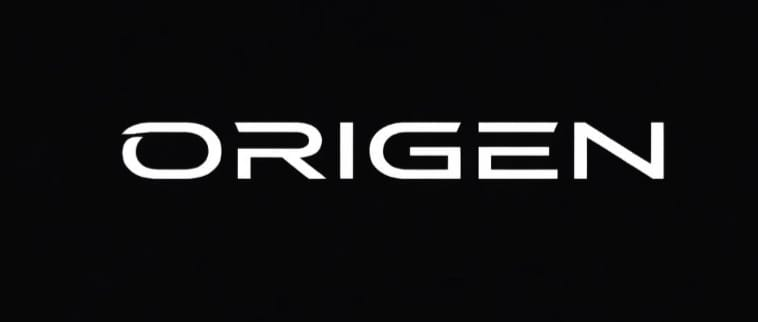

Technology with purpose
Building digital products intended to support communities, students, NGOs, and organizations.
THE COMPANY BEHIND EASYBILL
ORIGEN builds digital solutions with people at the center. EasyBill brings that product work to everyday billing and business operations.

Building digital products intended to support communities, students, NGOs, and organizations.
Creating useful, accessible experiences shaped around the people who rely on them.
Working with organizations to turn real needs into practical digital solutions.
EasyBill is ORIGEN's billing and point-of-sale product for businesses that need a straightforward way to manage customers, products, stock, and invoices.
It combines a desktop workspace with cloud-backed business records, so an account can access its data when connected to the internet.
Learn about the company, its work, and its partnerships on the official site.